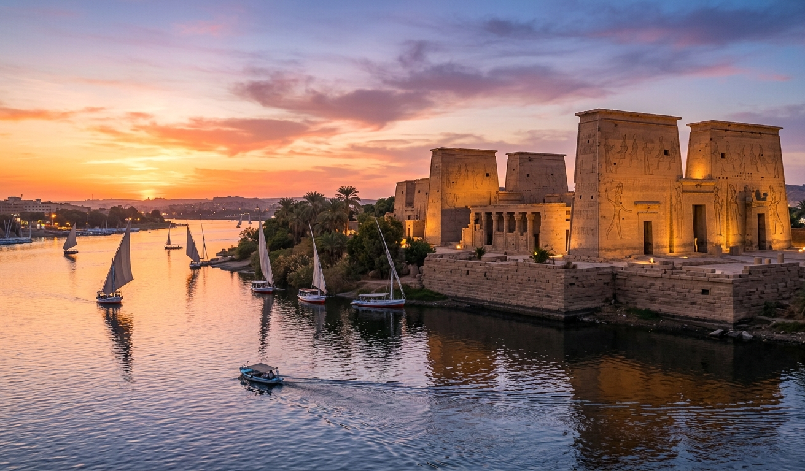

The Philae Temple in Aswan is an architectural gem from the Ptolemaic era dedicated to the goddess Isis, and it is a unique testament to the grandeur of ancient Egyptian art and engineering. It was immortalized by a global rescue epic that moved it to Agilkia Island, and today it remains a charming tourist beacon that tells tales of eternal history amid the embrace of the Nile.
